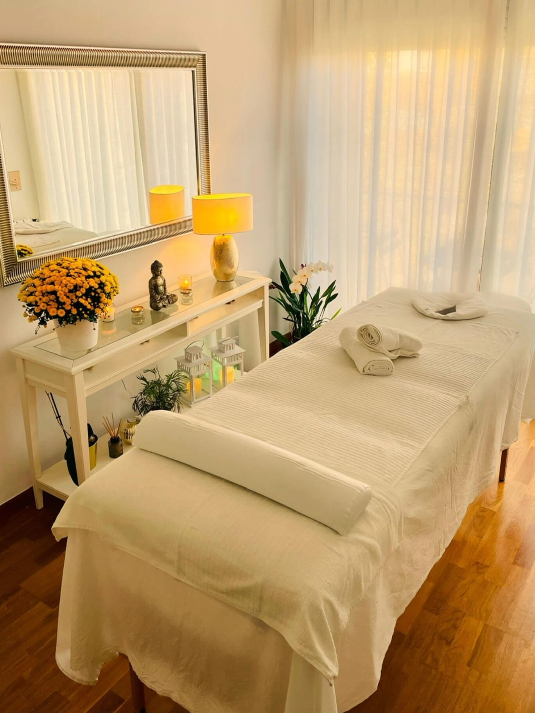

Masajes Relajantes Antiestrés
Alivia el estrés y la tensión muscular.
- Piedras volcánicas calientes
- Incluye rostro y cuello
Descubre mis masajes terapéuticos y relajantes diseñados para tu bienestar.

Bienvenido. Mi nombre es Leo y soy quiromasajista titulado y registrado, con más de seis años de experiencia en el ámbito del bienestar corporal.
Nací en Uruguay, pero desde hace varios años me encuentro plenamente afincado en Barcelona, ciudad en la que he desarrollado mi actividad profesional con dedicación, pasión y un fuerte compromiso con el cuidado integral de cada persona que confía en mis manos.
Mi consulta se encuentra en la zona de Vila Olímpica, un entorno tranquilo y accesible, ideal para desconectar del ritmo diario y regalarte un momento para vos. Las sesiones se realizan sobre camilla, utilizando aceites naturales de alta calidad, música suave y un ambiente cuidadosamente climatizado (con calefacción en invierno y aire acondicionado en verano), para que cada encuentro sea una experiencia completa de relajación y bienestar.
Trabajo siguiendo un estricto protocolo de higiene y desinfección, garantizando un espacio seguro y pulcro en todo momento. Además, priorizo siempre un trato humano, cercano y respetuoso, creando una atmósfera de confianza en la que podés sentirte cómodo desde el primer minuto.
Si buscás un masaje que combine técnica, calidez y profesionalismo, te invito a descubrir todo lo que puedo ofrecerte.
Cada detalle del espacio invita a relajarte. La iluminación cálida, la armonía en los colores y la presencia de elementos naturales crean un ambiente que se siente cuidado, íntimo y acogedor. La estética está inspirada en la calma: formas simples, decoración serena y un estilo que conecta con lo esencial. Es un lugar ideal para hacer una pausa, dejar atrás el ritmo del día y entregarte a una experiencia de descanso profundo.
Cada masaje está diseñado para reconectar con el cuerpo y ofrecer una experiencia personalizada de bienestar. Ya sea que busques liberar tensiones profundas, relajar cuerpo y mente, o disfrutar de un momento único a cuatro manos, encontrarás una propuesta que se adapta a vos. Cada técnica tiene variantes que podés elegir según tus necesidades, tus tiempos y tu energía. La sesión comienza con una breve conversación para conocer cómo te sentís y definir juntos el tipo de masaje ideal.
Alivia el estrés y la tensión muscular.
Deep Tissue-Tejido Profundo.
Lunes a Viernes a las 21:45 hrs. y sólo algunos fines de semana.
Te invito a conocer dónde está el salón y consultar las reseñas que me han dejado: